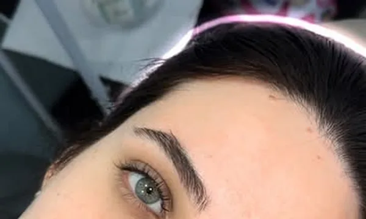

Especialistas em sobrancelha há mais de 10 anos
Sobrancelhas naturais, desenhadas para o seu rosto. Design, henna, brow lamination, micro e lash, no anexo do Bistek, em Criciúma.
- Desde 2016 no anexo do Bistek
- +10 anos de experiência
- 11 mil no Instagram

Agende em 3 passos
- 1Escolha os serviços
- 2Diga o melhor período
- 3Envie pelo WhatsApp
Sobrancelhas


Olhar

Rosto e pele
+10 anos de experiência
Sobrancelha é a nossa especialidade.
São mais de 10 anos trabalhando com sobrancelhas, sempre buscando o resultado natural, que valoriza o seu rosto sem exagero. Desde 2016 no anexo do Bistek, em Criciúma.
- Sobrancelhas naturais, no formato do seu rosto
- Uma técnica para cada objetivo: design, henna, lamination e micro
- Atendimento rápido, no mesmo lugar das suas compras
Onde fica
Av. Centenário, 3420 · anexo ao Bistek
Criciúma/SC · CEP 88803-100
Faça a sobrancelha e aproveite para resolver as compras no mesmo lugar.
Horário de atendimento: a confirmar com vocês.
Como chegarDúvidas
Qual a diferença entre henna, microblading e shadow?
A henna colore os fios e a pele por alguns dias. O microblading desenha fio a fio, e o shadow faz um efeito esfumado, os dois com micropigmentação. Na avaliação, a designer indica o melhor para você.
O que é brow lamination?
É uma técnica que alinha os fios e dá volume, deixando a sobrancelha com efeito penteado.
Como faço para agendar?
Escolha o serviço aqui no site e envie pelo WhatsApp, ou chame direto no (48) 99822-2134. A equipe confirma o horário com você.
Onde fica a Fábrica da Sobrancelha?
No anexo do Bistek da Av. Centenário, 3420, em Criciúma.